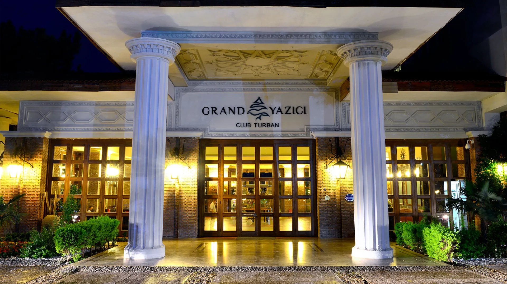

Hakkimizda
Marmaris’in masmavi sularını gözlerinizin önüne seren Grand Yazıcı Club Turban Termal Otel; denize sıfır konumu, çam kokuları ve kuş sesleriyle bütünleşmiş doğası ile sizlere aradığınız huzuru sağlamaktadır.
Turban Otel’in güncel trendleri ve zevkleri bir araya getiren atmosferi, siz misafirlerimize birinci sınıf tatil keyfini yaşatmayı vadetmektedir.
Bir tatilde arayacağınız ayrıcalık, eğlence ve huzurun mimarı olan Turban Otel; lüks ve ayrıcalıklı özel villaları ve marine süitleri, aile ve standart odaları ile toplam 543 oda ile “ultra her şey dâhil konseptinde “ sizlere hayallerinizin ötesindeki tatili sunmaktadır.
Her ince detayın düşünüldüğü tesislerimizde sizlere helikopterden tekneye çeşitli araçlarımızla VIP transfer hizmeti vermekteyiz.